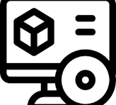
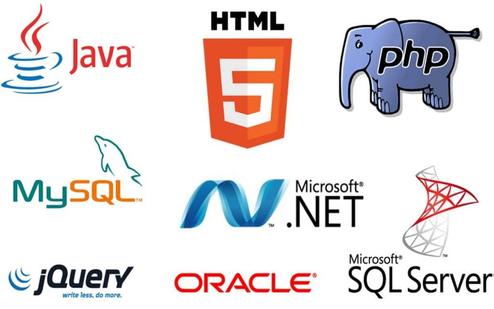

Software¶La residencia de mayores del pueblo ha iniciado un proyecto para mejorar la calidad de vida de sus residentes mediante el uso de herramientas digitales. En lugar de simplemente instalar sistemas operativos en ordenadores donados, ahora se busca **crear aplicaciones personalizadas** que se adapten a las necesidades de las personas mayores: desde interfaces sencillas hasta programas educativos o de comunicación.
A continuación vamos a aprender a desarrollar software útil, accesible y ético.
Software¶
El software es la parte lógica de un sistema informático, que está formado por los programas, datos, drivers, etc. El software es el conjunto de órdenes que tiene que realizar un ordenador, por tanto, éste no sabe hacer nada sin un software adecuado.

Tipos de software¶
Se pueden encontrar distintos tipos de software:
-
Software de sistema: Es el software que nos permite tener una interacción con nuestro hardware, es decir, el que controla la CPU y los periféricos; también es llamado sistema operativo. Dicho sistema es un conjunto de programas que administran los recursos del hardware y proporciona una interfaz al usuario. Es el software esencial para una computadora, sin el no podría funcionar, como ejemplo tenemos a Windows, Linux, Mac OS X. Se clasifica en:
- Sistemas operativos: Windows, Linux, Mac Os, etc.
- Controladores de dispositivo: Drivers, firmware.
- Utilidades de sistema: Herramientas de diagnóstico, corrección y optimización.

-
Software de Programación: Es un conjunto de aplicaciones que permiten a un programador desarrollar sus propios programas informáticos haciendo uso de sus conocimientos lógicos y lenguajes de programación. Algunos ejemplos:
- Editores de programas
- Compiladores
- Intérpretes
- Enlazadores
- Depuradores
- Entornos de Desarrollo Integrados (IDE)

-
Software de Aplicación: Son los programas que nos permiten realizar tareas especificas en nuestro sistema. A diferencia del software de sistema, el software de aplicación esta enfocada en un área especifica para su utilización. La mayoría de los programas que utilizamos diariamente pertenecen a este tipo de software, ya que nos permiten realizar diversos tipos de tareas en nuestro sistema. Las aplicaciones son parte del software de una computadora, y suelen ejecutarse sobre el sistema operativo.
- Editores gráficos, de música, de video, etc.
- Sistemas gestores de bases de datos. (MySQL)
- Programas de comunicaciones.
- Paquetes integrados de ofimática. (Editores de texto, hojas de cálculo, bases de datos, etc.).
- Programas de diseño asistido por computador.
- Aplicaciones de Sistema de control y automatización industrial.
- Software educativo.
- Software médico.
- Software de cálculo numérico.
Una aplicación de software suele tener un único objetivo: navegar en la web, revisar correo, explorar el disco duro, editar textos, jugar, etc. (Ejemplo: Internet Explorer, Outlook, Word, Excel, WinAmp, etc.).
Una aplicación que posee múltiples programas se considera un paquete. (Ejemplo: Microsoft office, LibreOffice, etc.).
En general, una aplicación es un programa compilado, escrito en cualquier lenguaje de programación.
Las aplicaciones pueden tener distintas licencias de distribución como ser código abierto, freeware, shareware, trialware, etc.
| Propietaria | Código abierto | Freeware | Shareware | |
| Qué es | Las licencias propietarias son las más comunes en el software comercial. Establecen que el software es propiedad de la empresa que lo creó y limitan la forma en que los usuarios pueden usarlo, generalmente prohibiendo la modificación, copia o redistribución. | Las licencias de código abierto permiten a los usuarios acceder, modificar y redistribuir el código fuente del software. Fomentan la colaboración y el desarrollo comunitario. Sin embargo, cada licencia de código abierto tiene sus propias reglas; algunas pueden requerir que las modificaciones también se distribuyan de forma abierta. | El freeware es software que se ofrece de forma gratuita, pero a diferencia del software de código abierto, no necesariamente permite la modificación o redistribución de su código fuente. | El shareware permite a los usuarios probar el software de forma gratuita durante un período limitado antes de comprar la versión completa. Es una forma de ofrecer una demostración del software antes de la compra. |
| Cuándo se usa | Se utilizan principalmente en software comercial, donde la empresa busca proteger su propiedad intelectual y generar ingresos a través de la venta o suscripción del software. | Son comunes en proyectos que buscan promover la innovación colaborativa y la transparencia, permitiendo a cualquier usuario contribuir al desarrollo y mejora del software. | Generalmente se utilizan para software que busca una amplia distribución sin coste para el usuario, pero donde el autor retiene todos los derechos de propiedad intelectual. | Utilizado por desarrolladores que quieren que los usuarios prueben el software antes de comprometerse a comprarlo. |
| Ejemplos | Microsoft Office: un conjunto de aplicaciones de productividad que incluye Word, Excel y PowerPoint. Adobe Photoshop: un programa avanzado de edición de imágenes y gráficos utilizado profesionalmente en diseño y fotografía. | Linux: un sistema operativo ampliamente utilizado en servidores y sistemas integrados. Hay varias distribuciones, como Ubuntu o Fedora. Mozilla Firefox: un navegador web popular conocido por su enfoque en la privacidad y la personalización. | Skype: una aplicación de comunicación para videollamadas y mensajes. Adobe Acrobat Reader: un lector de PDF utilizado para abrir, visualizar e imprimir archivos PDF. | WinRAR: un programa para comprimir y descomprimir archivos. Malwarebytes: Este es un software de seguridad que ofrece una versión de prueba gratuita y avanzada para la detección y eliminación de malware. Después de un período de prueba, los usuarios pueden optar por comprar la versión completa para mantener el acceso a todas las funcionalidades. |
Las aplicaciones tienen algún tipo de interfaz, que puede ser una interfaz de texto o una interfaz gráfica (o ambas).
Propiedad intelectual y licencias¶
Estos dos conceptos son los pilares que sostienen los derechos de los creadores sobre sus obras, ya sean literarias, musicales, de software o artísticas, permitiéndoles controlar y obtener beneficios de su uso.
Propiedad Intelectual¶
La propiedad intelectual abarca diferentes formas de protección según el tipo de creación.
Los derechos de autor protegen automáticamente cualquier obra artística o literaria en el momento en que es creada. Esto significa que, si escribes un poema o compones una canción, esos trabajos están inmediatamente bajo la protección de los derechos de autor sin necesidad de realizar ningún trámite adicional. Del mismo modo, las marcas registradas cuidan aquellos símbolos, nombres o slogans que distinguen productos y servicios, como el icónico logo de Apple o el eslogan «Just Do It» de Nike.

La licencia entra en juego como un acuerdo que permite a otras personas utilizar una obra protegida bajo términos específicos. Cuando compras o usas software, por ejemplo, en realidad estás adquiriendo una licencia que te permite usarlo bajo ciertas condiciones, no la propiedad del software en sí. Las licencias «Creative Commons» son otro ejemplo excelente de cómo los creadores pueden permitir el uso de sus obras.

Estas licencias facilitan que otros compartan y utilicen legalmente el contenido, como fotografías o música, siempre que se respeten las condiciones establecidas, como la atribución al autor y la no utilización comercial, si así se requiere.
Estas regulaciones tienen aplicaciones prácticas en todos los aspectos de nuestra vida:
- En el ámbito académico, por ejemplo, es fundamental citar correctamente las fuentes y respetar los derechos de autor para evitar el plagio.

- En el ámbito profesional, las empresas deben asegurarse de que utilizan materiales debidamente licenciados, como software o imágenes para campañas publicitarias, para evitar violaciones legales que pueden conllevar sanciones graves.

- Incluso en nuestra vida personal, la forma en que descargamos y compartimos contenido, como música o películas, debe respetar las leyes de propiedad intelectual para apoyar a los creadores y permitir que continúen desarrollando nuevas obras.
Por lo tanto, respetar la propiedad intelectual y hacer un uso correcto de las licencias nos ayuda a evitar problemas legales, al mismo tiempo que favorece la innovación, beneficiando a toda la sociedad.
Referencias¶
Actividades¶
📝 AA4.1 Software¶
(C.ESP2 / CE1.3 / IC1-3p)
- ¿Por qué es necesario el software en un ordenador?
- ¿Qué tarea realiza el software de sistema?
- Nombra los sistemas operativos más conocidos.
- ¿Qué es el software de programación?. Pon un ejemplo.
-
Busca en Internet el nombre de un programa de Windows y otro de Linux que sirvan para…
- Navegar por Internet
- Retocar una foto
- Hacer un dibujo técnico
-
El software puede ser freeware, shareware o trialware. ¿En qué consiste cada una de estas modalidades?
- ¿Qué es la interfaz de un programa?
📝 AA4.2 Propiedad Intelectual¶
(C.ESP2 / CE1.4 / IC1-3p)
- Explica por qué es importante respetar las licencias y cómo el uso responsable de estos recursos beneficia tanto a los creadores como a los usuarios.
-
Investiga tres ejemplos reales de materiales que puedas usar legalmente:
- Una imagen (de banco libre o con licencia CC).
- Una canción o sonido libre de derechos.
- Un programa de edición gratuito o con licencia libre (por ejemplo, GIMP, Audacity…).
-
Completa la siguiente tabla con la información:
Tipo de material Nombre o enlace Tipo de licencia Condiciones de uso ¿Por qué lo has elegido? Imagen Música Software